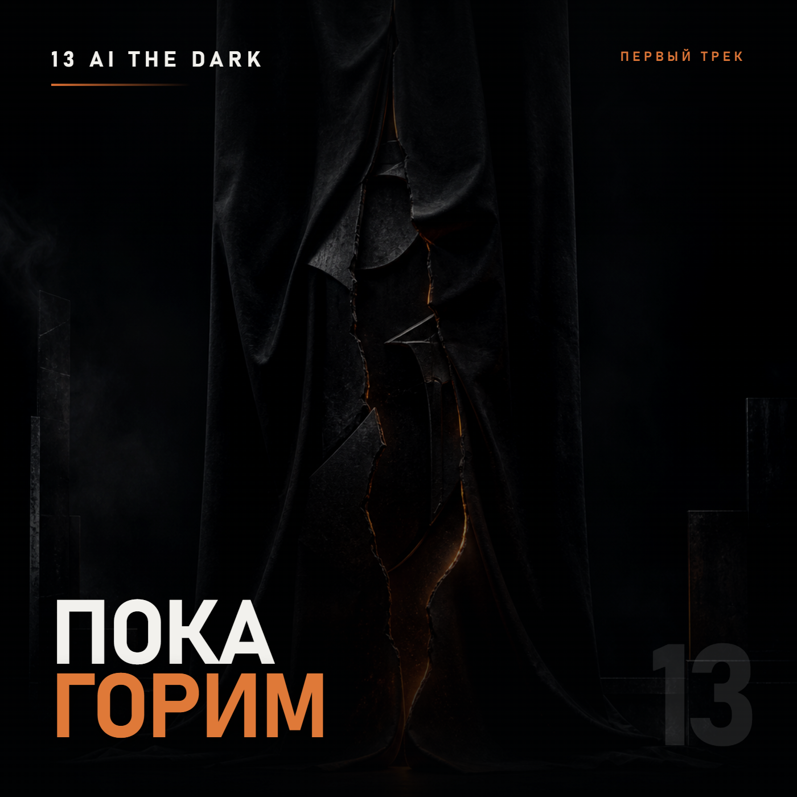
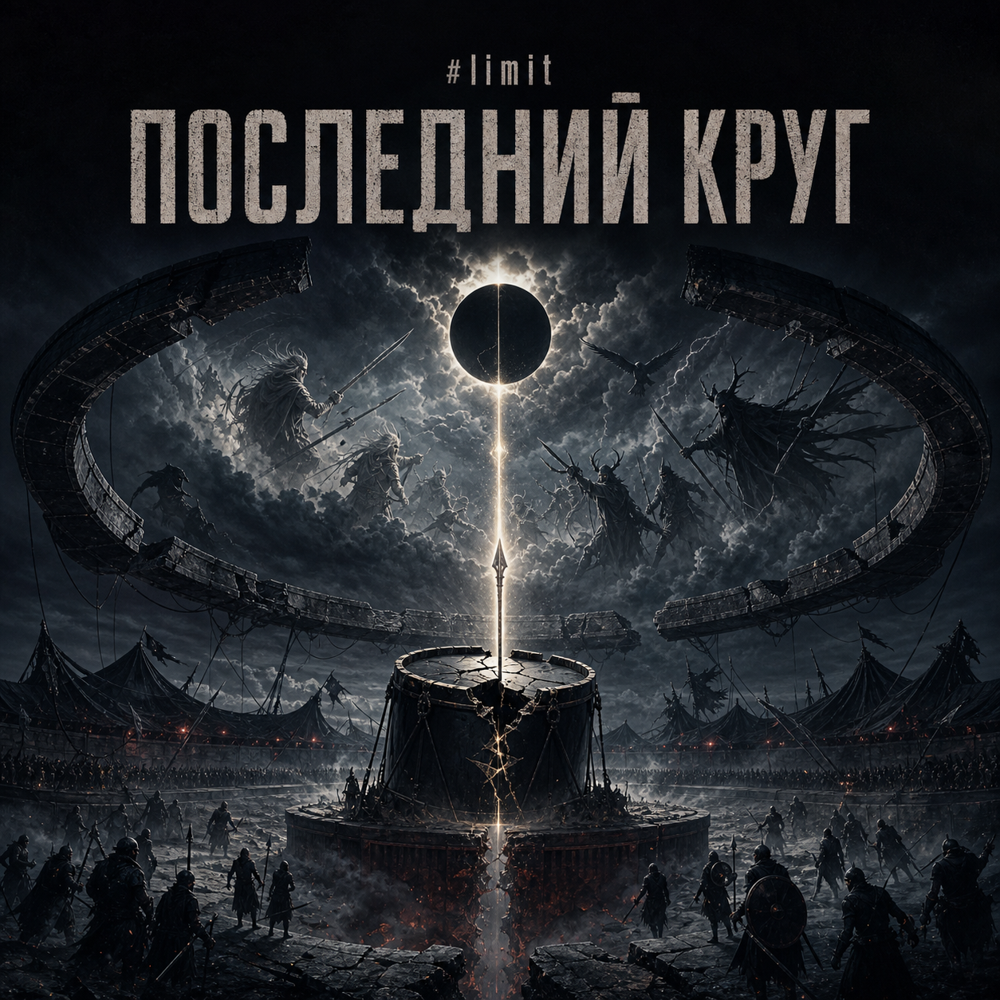
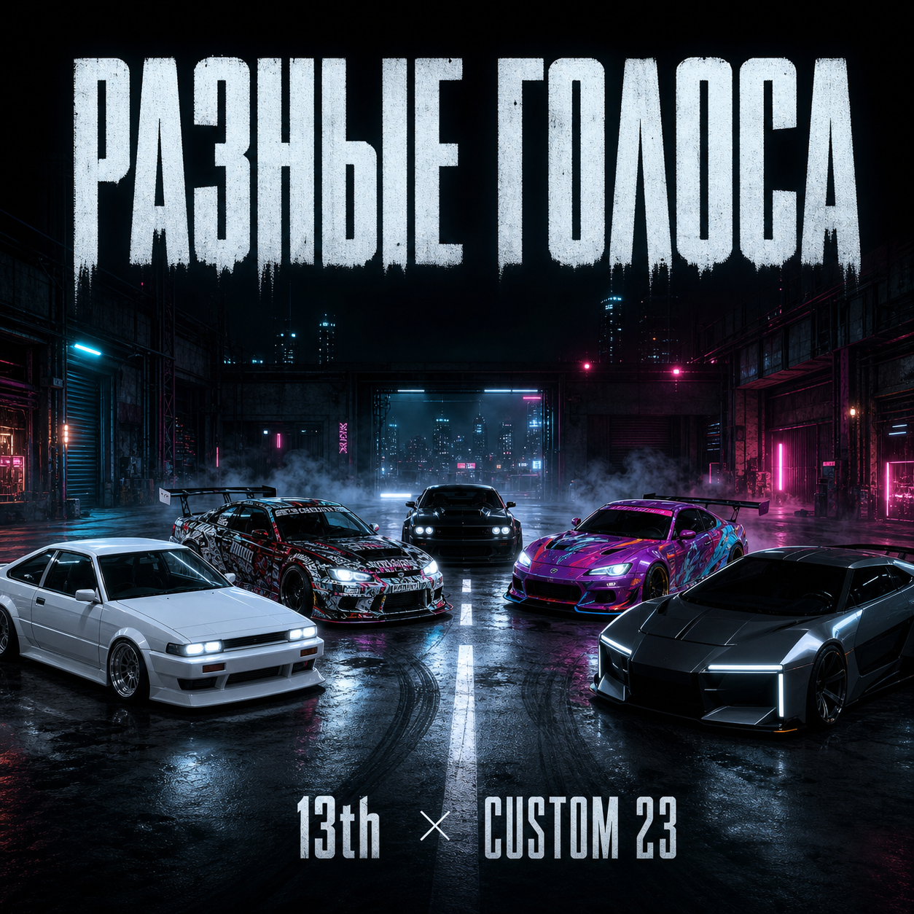
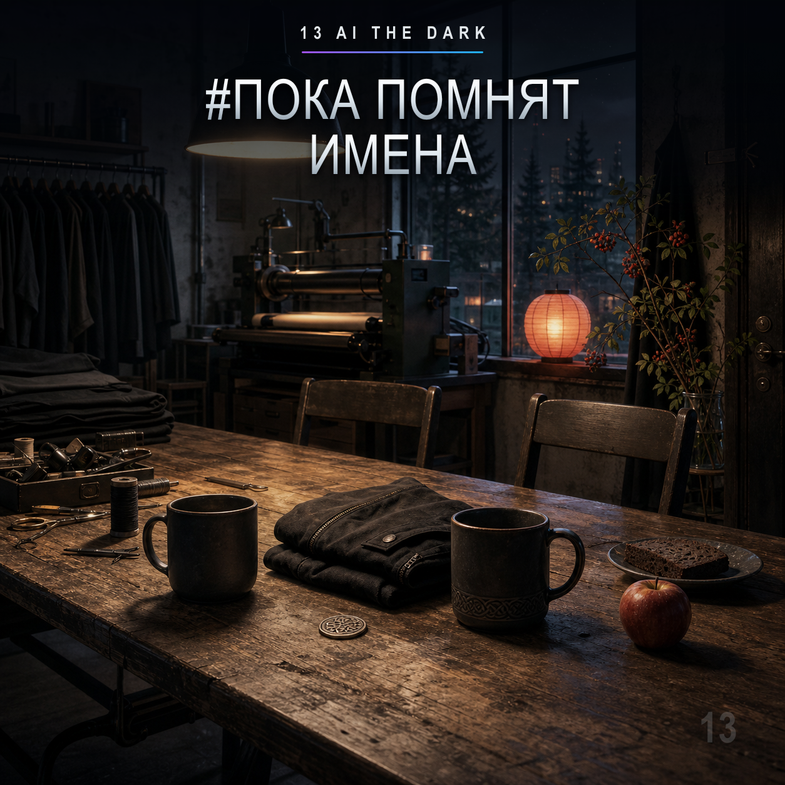
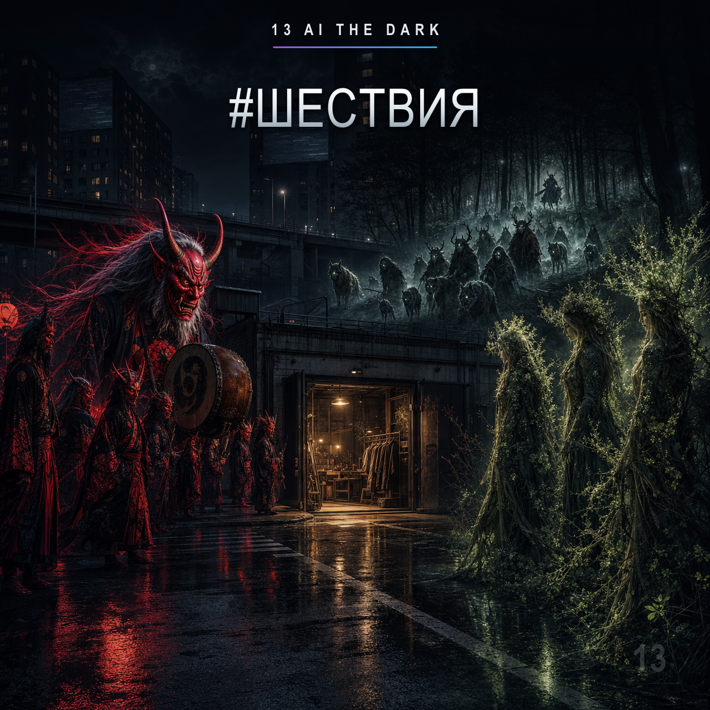

Здесь собираются наши треки. Сейчас их шесть — дальше раздел будет расти вместе с проектом.

01 · 13 AI the Dark
Пока горим
Первый шаг. Начало истории.
Трек о людях, которые продолжают собирать своё дело после ошибок и неудач. Пока в цехе горит свет и рядом остаются свои, история продолжается.
Дата выхода
Участники
13 AI the Dark · ArtS13Studio
Коллаборация
Самостоятельный релиз

02 · 13 AI the Dark
Последний круг
Скорость, выбор и точка невозврата.
Последний круг — момент, когда отступать уже поздно и остаётся закончить начатое. Скорость здесь становится проверкой выбора и характера.
Дата выхода
Участники
13 AI the Dark · ArtS13Studio
Коллаборация
Проект #limit

03 · 13 AI the Dark
Разные голоса
Коллаборация с Custom23.
Трек о людях с разными характерами и дорогами, которые сходятся в одной точке. Он продолжил коллаборацию, начатую четырьмя эксклюзивными футболками для пилотов команды.
Дата выхода
Участники
13 AI the Dark · ArtS13Studio · Custom23
Коллаборация
Совместный проект с Custom23
04 · 13 AI the Dark
Маска у цеха
Чужое лицо, старый цех и то, что остаётся за маской.
У мастерской появляется незнакомец с расколотой маской. Его не расспрашивают о прошлом — принимают по тому, что он делает рядом с другими.
Дата выхода
Участники
13 AI the Dark · ArtS13Studio
Коллаборация
Самостоятельный релиз

05 · 13 AI the Dark
Пока помнят имена
Память о людях, оставивших своё имя в общей истории.
В мастерской оставляют свободные места для тех, кто когда-то был рядом. Разные традиции говорят о памяти по-своему, но чувство остаётся одним.
Дата выхода
Участники
13 AI the Dark · ArtS13Studio
Коллаборация
Самостоятельный релиз

06 · 13 AI the Dark
Шествия
Разные силы сходятся у порога старого цеха.
Через современный город проходят три мифологических шествия, и каждое проверяет людей по-своему. Они пришли не ради войны, а чтобы увидеть, осталось ли в человеке что-то настоящее.